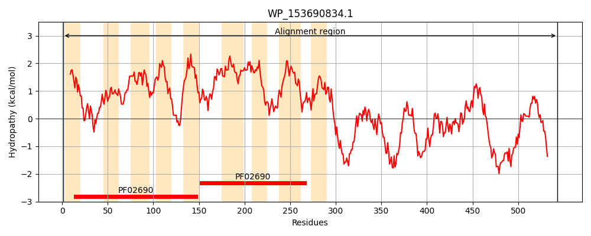
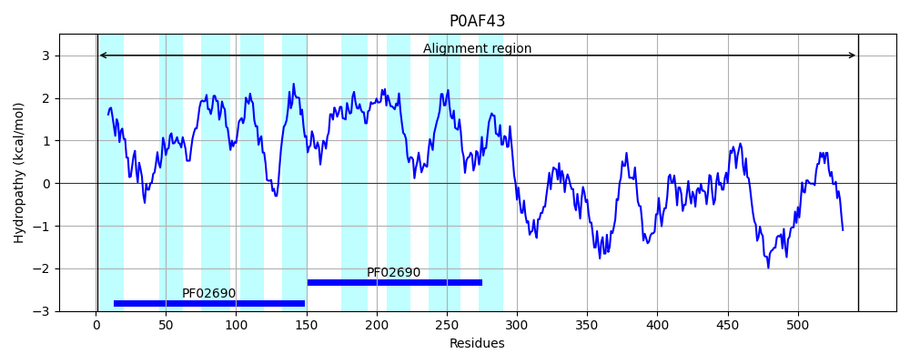
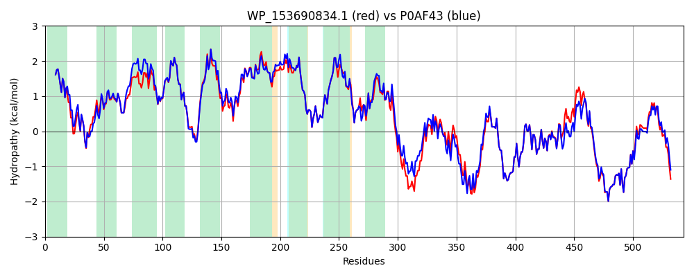

Hit Accession: P0AF43
Hit TCID: 2.A.58.2.1
Hit Description: gnl|BL_ORD_ID|8806 gnl|TC-DB|P0AF43|2.A.58.2.1 Uncharacterized protein yjbB - Escherichia coli.
Mach Len: 543
e:0.000000
Query TMS Count : 9
Hit TMS Count: 9
TMS-Overlap Score: 8.600000
Predicted Substrates:CHEBI:7793;phosphate(3-)
BLAST Alignment:
Score: 2413 , Bit scores: 934 bits, E-value: 0.0e+00, Alignment length: 543, Percentage identity: 90
Query: 1 MLTLLHLLSAVALLVWGTHIVRTGVMRVYGARLRTVLSSSVEKKPLAFCAGLGVTALVQSSNATTMLVTSFVAQDLVGLTPALVMVLGADVGTALMARVLTFDLSWLSPLLIFIGVIFFLGRKQTRAGQLGQVGIGLGLILLALELIVQAVNPITQANGVQVIFASLTGDIMLDALIGAVFAIISYSSLAAVLLTATLTAAGAISFPVALCLVIGANLGSGLLAMLNNSAANAAARRVALGSLLFKLVGSLIILPFVHPLAAAMHKLPLAESELVIYFHVFYNLLRCIAMVPFAGPMAKLCQRMIRDEPELDNQLKPKHLDPSALDTPALALANAARETLRIGDAMEQMLGSLHKVMHGEPRQEKELRRMADDINVLYTAIKLYLARMPKDELAEEESRRWAEIIEMSLNLEQASDIVERMGSEIADKSLAARRAFSVEGLKELDALYDLLLSNLQLAMSVFFSSDVPSARRLRRSKHRFRILNRRYSHAHVDRLHQQNVQSIETSTLHLALLGDMKRLNSLFCSVAYSVMEQPDEDDERDDY 543
MLTLLHLLSAVALLVWGTHIVRTGVMRV+GARLRTVLS SVEKKPLAFCAG+GVTALVQSSNATTMLVTSFVAQDLV L PALV+VLGADVGTALMAR+LTFDLSWLSPLLIFIGVIFFLGRKQ+RAGQLG+VGIGLGLILLALELIVQAV PITQANGVQVIFASLTGDI+LDALIGA+FAIISYSSLAAVLLTATLTAAG ISFPVALCLVIGANLGSGLLAMLNNSAANAAARRVALGSLLFKLVGSLIILPFVH LA M KL L ++ELVIYFHVFYNL+RC+ M+PF PMA+ C+ +IRDEPELD QL+PKHLD SALDTP LALANAARETLRIGDAMEQM+ L+KVMHGEPRQEKELR++ADDINVLYTAIKLYLARMPK+ELAEEESRRWAEIIEMSLNLEQASDIVERMGSEIADKSLAARRAFS++GLKELDALY+ LLSNL+LAMSVFFS DV SARRLRRSKHRFRILNRRYSHAHVDRLHQQNVQSIETS+LHL LLGDM+RLNSLFCSVAYSV+EQPDED+ RD+Y
Sbjct: 1 MLTLLHLLSAVALLVWGTHIVRTGVMRVFGARLRTVLSRSVEKKPLAFCAGIGVTALVQSSNATTMLVTSFVAQDLVALAPALVIVLGADVGTALMARILTFDLSWLSPLLIFIGVIFFLGRKQSRAGQLGRVGIGLGLILLALELIVQAVTPITQANGVQVIFASLTGDILLDALIGAMFAIISYSSLAAVLLTATLTAAGIISFPVALCLVIGANLGSGLLAMLNNSAANAAARRVALGSLLFKLVGSLIILPFVHLLAETMGKLSLPKAELVIYFHVFYNLVRCLVMLPFVDPMARFCKTIIRDEPELDTQLRPKHLDVSALDTPTLALANAARETLRIGDAMEQMMEGLNKVMHGEPRQEKELRKLADDINVLYTAIKLYLARMPKEELAEEESRRWAEIIEMSLNLEQASDIVERMGSEIADKSLAARRAFSLDGLKELDALYEQLLSNLKLAMSVFFSGDVTSARRLRRSKHRFRILNRRYSHAHVDRLHQQNVQSIETSSLHLGLLGDMQRLNSLFCSVAYSVLEQPDEDEGRDEY 543 | Protein Hydropathy Plots: |
|---|
|  |  |
Pairwise Alignment-Hydropathy Plot:
|
|---|
|  |